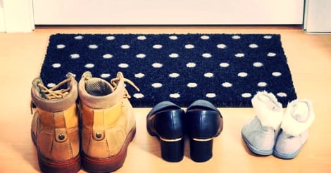

Cultura
Neste texto, preparamos tudo o que você precisa saber sobre a cultura da Alemanha, que pode ser bastante útil se você está planejando visitar ou até estudar no país. Vamos abordar os pontos mais importantes sobre estilo de vida, costumes e tradições alemãs.
Vamos abordar os pontos mais importantes sobre estilo de vida, costumes e tradições alemãs. A Alemanha é casa de 6 das 100 melhores universidades do mundo, o que faz desse país um dos destinos mais cobiçados para quem quer estudar. Além disso, o país ocupa o 4° lugar dentre as maiores economias do mundo, o que também o torna muito atraente.
O país é o mais populoso da Europa, contando com mais de 80 milhões de habitantes. Além disso, está localizado no coração do continente e conta com sistemas de transporte de primeiro nível, o que faz dele um lugar muito estratégico para quem quer conhecer outros países nos arredores.

Informações gerais sobre a Alemanha:
Capital: Berlim
Idioma oficial: Alemão
Religião oficial: Cristã
Governo: República federativa
População: Estimada em 82,927,922 habitantes em 2018
Tradições
As tradições alemãs incluem o "Kaffee und Kuchen", o equivalente a um chá da tarde inglês, no qual famílias e amigos param de trabalhar para se reunir à tarde para tomar café e bolo.
Dar presente em dinheiro: O que para muitos brasileiros pode parecer um tanto impessoal, é altamente praticado aqui na Alemanha: presentear alguém com dinheiro em espécie ou vale-compras (chamado em alemão de (der) Gutschein). A ideia é proporcionar a quem vai receber o presente a chance de comprar algo que vá realmente usar. Mas, se você acha que os alemães simplesmente vão enfiar cédulas de dinheiro num envelope, você se enganou! Eles são altamente caprichosos e criativos nesse sentido, investindo bastante tempo em presentes feitos à mão, ornamentando-os com cédulas de dinheiro
Pedir ao convidado para tirar os sapatos antes de entrar em casa: Há o costume de se pedir para o visitante tirar os sapatos „sujos“ (os que se usa na rua) antes de entrar. O que se costuma oferecer são pantufinhas quentinhas… Vale dizer que não são todos os alemães que o fazem, mas esse costume é bem presente entre a geração mais jovem. Já muitos idosos consideram um tanto desrespeitador deixar seus visitantes de meia
Chamada de Teufelsberg (“montanha do diabo”), essa montanha nos arredores de Berlim é muito visitada por turistas e alemães que querem fazer trilhas e ter uma vista panorâmica da cidade. Do topo, não dá nem para imaginar que a montanha é resultado do que sobrou dos prédios da cidade após o fim da Segunda Guerra Mundial. Até 1972, o local recebeu um terço dos escombros de Berlim, o que representa cerca de 15.000 construções.
Clique aqui para voltar ao Menu Principal